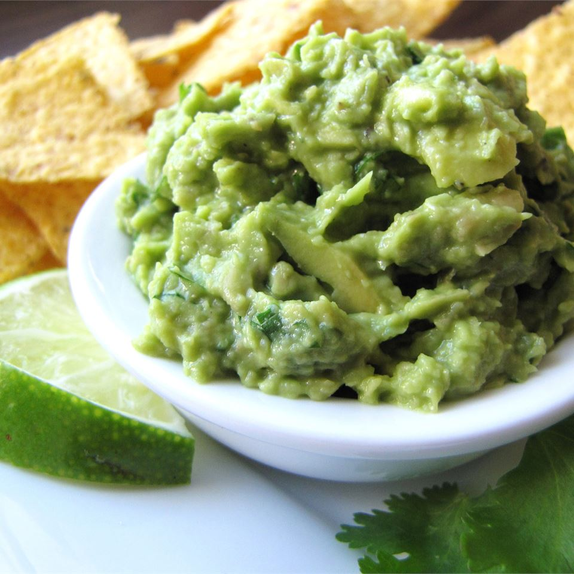

Guacamole

This is so easy and so good. It's always the hit
of the party and it's gone before anything else
on the table.
Ingredients
- 5 avocados - peeled, pitted, and mashed
- 2 tablespoons fresh lemon juice
- ¾ cup minced green
- ½ cup minced fresh cilantro
- salt and pepper, to taste
Directions
- Stir together the avocado and lemon juice in a serving bowl; add the green onion and cilantro; mix well.
- Season with salt and pepper. Serve immediately or store covered in refrigerator with avocado pits in the bowl to keep from browning.